OpenReco reconstructs drone and camera imagery into dense point clouds, textured meshes, orthomosaics and elevation models — georeferenced, measurable, and fully reproducible. One desktop app, the entire pipeline.
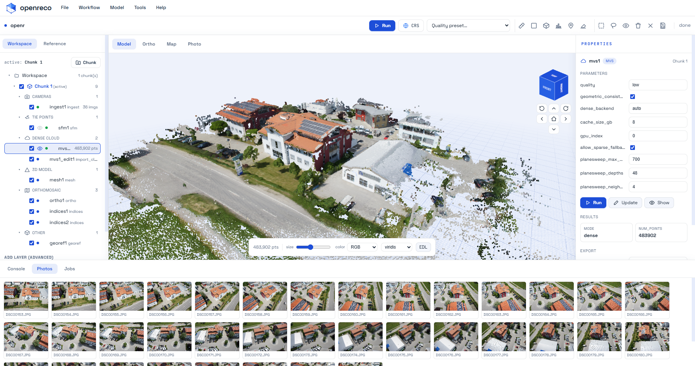
Built for people who measure the real world
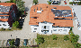
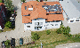
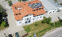
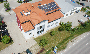
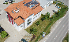
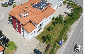
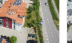
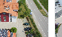
Drop in a folder of overlapping images. OpenReco aligns the cameras, builds a dense cloud, meshes and textures it — then hands you a model you can measure, classify and export.
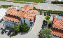
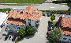
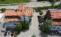
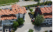
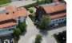
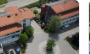
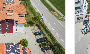
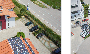
From raw images to georeferenced deliverables — every step lives in a single, node-based workspace. Run the whole graph or any stage on its own; results are cached and reproducible.
Add a folder of images to a chunk (ingest + quality check). The first step of any project.
Detect features, match, and solve camera poses to produce a sparse point cloud.
Place the model in a CRS from EXIF GPS or ground control points using the marker tool.
Dense multi-view stereo depth maps fused into a high-density point cloud.
Reconstruct a polygonal mesh surface from the dense cloud.
Bake a UV texture atlas onto the model from the source images.
Rasterize a digital elevation model (DSM) from the dense cloud or mesh.
Orthorectified, georeferenced image mosaic ready for GIS.
NDVI / ExG / VARI maps from the orthomosaic for agriculture & health analysis.
Classify the dense cloud into ground, building and vegetation.
Split the model into streamable 3D Tiles for the web.
Generate contour lines at any interval from the DEM.
Remove noise and stray points with statistical outlier removal.
Remove small floating mesh islands and keep the main surface.
Align separate chunks with ICP and merge their clouds into one.
A GPU multi-view stereo engine (COLMAP CUDA) fuses depth maps into clouds of hundreds of thousands of points, then meshes and textures them — all from the same source photos.
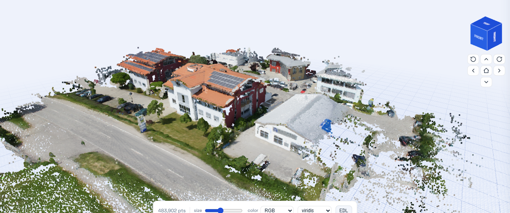
Pick a tool, click on the 3D model, and read real-world quantities instantly. Every measurement is georeferenced and exportable.
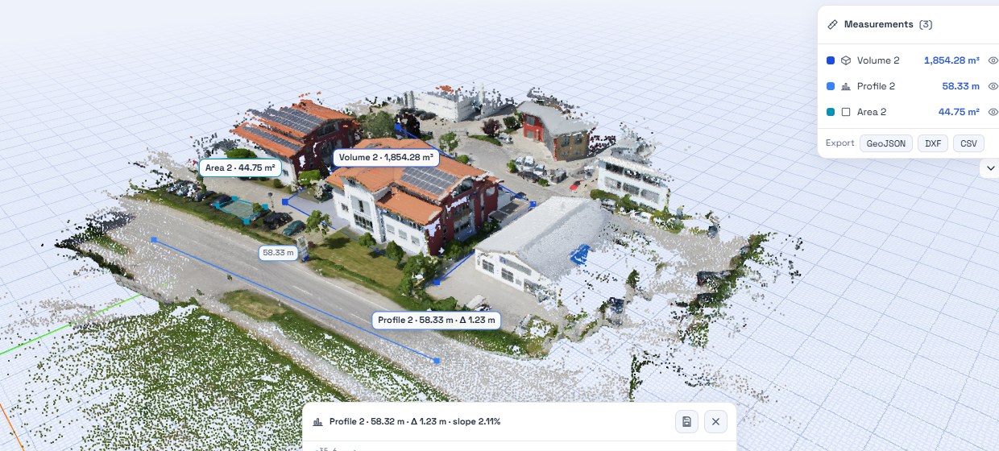
Produce survey-grade 2D deliverables from the same reconstruction — orthorectified imagery, elevation rasters, contours and crop-health indices.
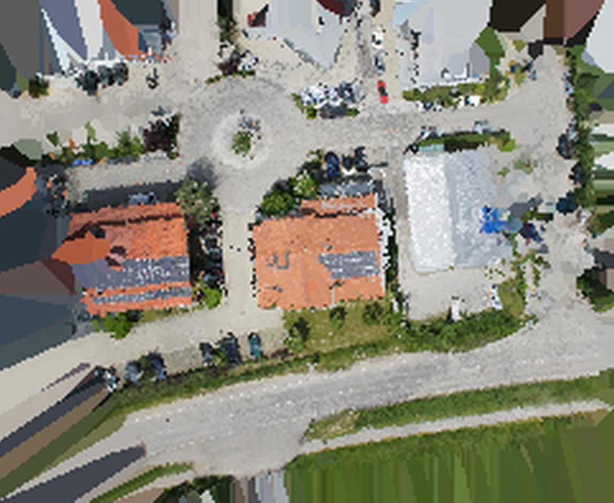
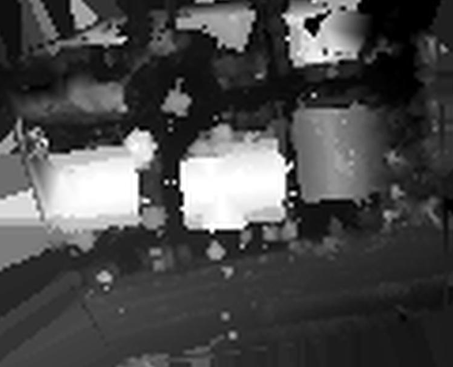
Inspect hundreds of thousands of points at a smooth frame rate, with the controls photogrammetrists actually reach for.
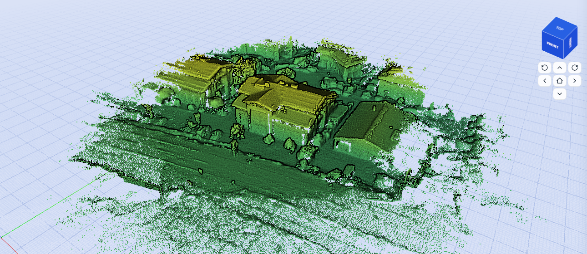
Color points by true RGB or by height to read terrain at a glance.
viridis and friends for perceptually-uniform elevation shading.
EDL shading brings out depth and structure in dense clouds.
Switch views, adjust point size, and orbit with the nav cube.
Every stage is content-addressed by a cache key derived from its inputs and resolved parameters. Re-run a project and identical stages are reused — byte-for-byte reproducible, every time.
COLMAP CUDA backend with an automatic CPU fallback.
EPSG georeferencing from EXIF GPS or ground control points.
Resolved parameters hashed per stage for instant re-runs.
Quality presets and multi-chunk projects that merge cleanly.
Every artifact leaves OpenReco in a standard format your GIS, CAD or web stack already speaks.